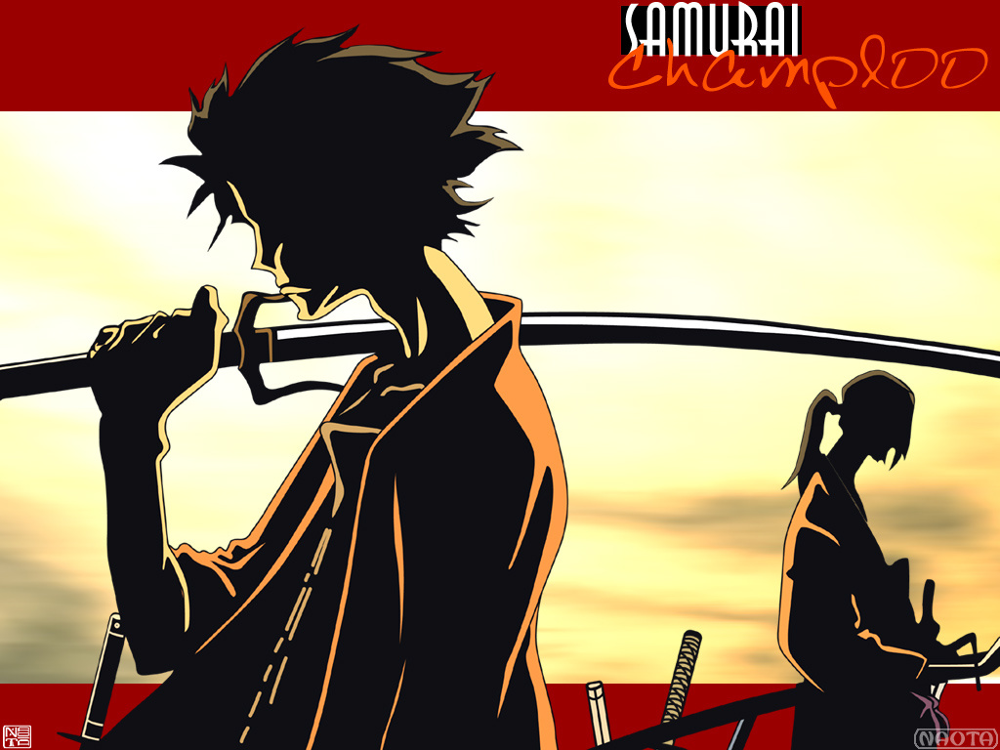
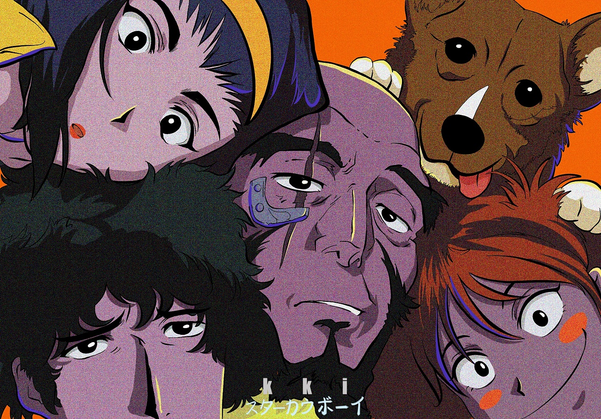
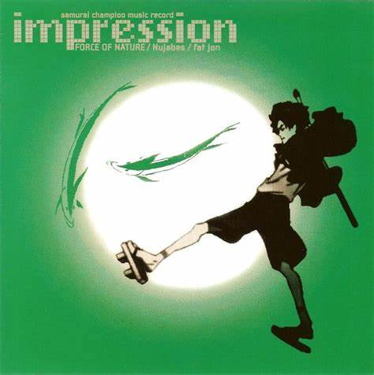
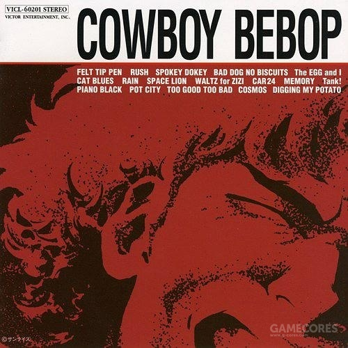

《混沌武士》是一部典型的公路片。 三个主人公，因为一场偶然碰到一起。大家互相不打探彼此的过去，也不关心对方要去往何方，仅仅凭借女主“寻找一个向日葵味道的武士”，这样一个莫名其妙的目标，便踏上了周游全国的旅程。 一路上三人踏歌而行。没有洗白，没有嘴炮，没有任何拖沓和婆婆妈妈。 有时他们穷困潦倒，有时他们快意恩仇，但一切却又都如缕清风。每当片中的bgm响起，仿佛都能闻到阳光洒在向日葵上的味道。 有钱就吃，没钱就饿，吃了没钱就跑。不合就打，极尽搞笑，随心随性，做任何事都全凭心情。无幻的桀骜不驯，仁的冷静镇若，风的开朗元气。 三个人整部动画中，数次在三岔口分道扬镳，又数次在三岔口聚回一起。他们不是亲情，不是友情，不是爱情。却又胜似亲情，胜似友情，胜似爱情。 |
 |  | 2071年，随着超光速航行技术的实现，人类得以在太阳系范围内方便的移动，但是由于设计上的失误，这种技术引发了月球的爆炸，无数的月球碎片被吸引向地球，造成了空前绝后的大灾难。存活下来的人类逃离地球，并开始在太阳系各地建立家园。 由于这次灾难，国家政府等权利机构都极为不稳定、治安问题也成为了一个难题。有些组织开始允许个人抓捕通缉的罪犯并换取奖金，这就是“赏金猎人”。 spike和jett是驾驶飞船BEBOP号在宇宙中以捉拿逃犯获取奖金为生的赏金猎人。两人在星际间的旅程中，结识了身负巨债、嗜财如命的美女菲和电脑神童艾德，并收养了拥有高智商的数据狗爱因。从此，四人一狗游荡在广阔之宇宙之中，在自己与他人的生活中经历著种种悲欢离合，也寻找著各自的过去。 |
|  | 渡边信一郎在是一名优秀的动画导演同时，还是一位狂热的音乐爱好者，对配乐有着极高要求的同时又能让音乐和画面贴合得天衣无缝。他在上一部作品《星际牛仔（Cowboy Bebop）》里，就要求使用爵士乐和摇滚乐作为配乐的风格（他甚至把“Bebop”写进了动画的标题里），负责配乐的菅野洋子也不负众望地造就了一代经典。到了制作《混沌武士》时，渡边信一郎又更加大胆地冒出了想使用Hip Hop作为动画配乐的想法。 “When I first come up with the idea of what I am going to create, quite often the music appears at the same time. So, with 'Samurai Champloo' it wasn’t that I had the story in mind and then added hip-hop to it. When I came up with the character of Mugen I heard hip-hop at the same time, and I thought he was going to be a rapper samurai.” |
BLUE and JASS“THREE TWO ONE,LET's JAM!”菅野洋子的音乐，与其说和谐，不如说正以微妙的违和感取胜：在枪战和追击战中，不使用激烈的音乐，而用轻盈的旋律和低沉温柔的歌声覆盖在枪击声之上，这大概也是许多导演譬如昆汀爱用的手法。 作为《星际牛仔》的配乐作曲家，菅野洋子用强烈的个人风格为动画锦上添花。她主导创作的全系配乐正合时宜地配合故事走向，从具象的视觉效果延伸出抽象的情绪空间，缝合故事与情绪，触动着每一位听者的内心。 |
 |